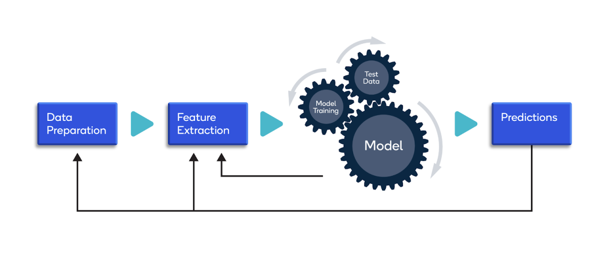

Machine Learning I & II
Machine Learning is a fundamental discipline in modern artificial intelligence that enables computers to learn from data without being explicitly programmed. This comprehensive two-semester course covers both supervised and unsupervised learning techniques, from foundational algorithms to advanced ensemble methods. Students will master regression, classification, clustering, dimensionality reduction, and model evaluation techniques. Through hands-on projects using Python, scikit-learn, and TensorFlow, students will develop practical skills in building, training, and deploying machine learning models for real-world applications across various domains including healthcare, finance, and technology.
Learning Objectives
- Understand fundamental concepts of supervised and unsupervised learning
- Master regression techniques: linear, polynomial, ridge, and lasso regression
- Implement classification algorithms: logistic regression, SVM, decision trees, and random forests
- Apply clustering algorithms: K-means, hierarchical clustering, and DBSCAN
- Perform dimensionality reduction using PCA and t-SNE
- Evaluate and optimize models using cross-validation and hyperparameter tuning
- Build ensemble models using bagging, boosting, and stacking techniques
- Deploy machine learning models in production environments
Course Outline
-
Machine Learning I:
- Introduction to ML and Python ecosystem
- Linear regression and gradient descent
- Logistic regression and classification metrics
- Decision trees and random forests
- Support Vector Machines (SVM)
- K-Nearest Neighbors (KNN)
- Model evaluation and validation
- Cross-validation and bias-variance tradeoff
- Ensemble methods: bagging and boosting
- XGBoost, LightGBM, and CatBoost
- Unsupervised learning: K-means clustering
- Hierarchical and density-based clustering
- Dimensionality reduction: PCA and t-SNE
- Feature engineering and selection
- Hyperparameter optimization
- Model deployment and MLOps basics
Machine Learning II:

GPU acceleration is indispensable for Machine Learning, drastically reducing training times and enabling experimentation with more complex models and diverse datasets. Students will leverage GPU-accelerated libraries like cuML and RAPIDS to process large-scale datasets efficiently, train ensemble models with millions of parameters, and perform hyperparameter optimization across thousands of configurations in parallel. With campus GPU infrastructure, learners can work with real-world datasets that would be computationally prohibitive on CPUs alone, experiment with gradient boosting frameworks optimized for GPU execution, and develop scalable ML pipelines that mirror industry best practices in companies like Google, Amazon, and Microsoft.
Instructor

M.Sc. Sergio Barrientos
Telecommunications Engineer - Image Processing Specialist